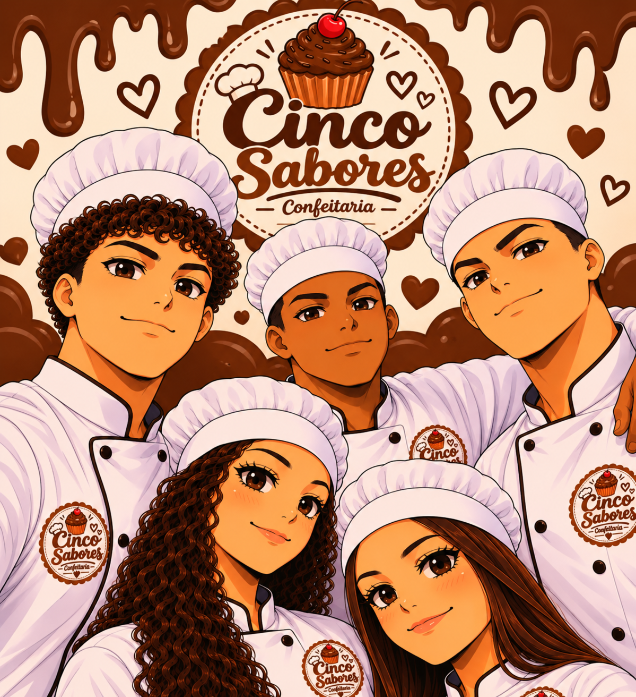

Cinco Sabores nasceu de uma ideia criada por cinco amigos: Angelo, Ana, Daniel, Nhayanne e Yan, durante um trabalho escolar. A escolha do tema surgiu porque o Angelo já tem o costume de fazer bolos, e os outros integrantes do grupo também gostam muito dessa delícia. Assim, decidimos unir essa paixão em um projeto que representasse nosso trabalho em equipe. Com criatividade, dedicação e muitas ideias, criamos a Cinco Sabores, uma marca que representa nossa união e nosso gosto pela confeitaria. Cinco integrantes, uma ideia e muitos sabores para compartilhar!
Como tudo começou?

Diretrizes da Empresa
Objetivo
Nosso objetivo é produzir e oferecer bolos e doces de qualidade, unindo sabor, criatividade e carinho em cada preparo. Queremos proporcionar experiências especiais aos nossos clientes, tornando cada momento ainda mais doce e inesquecível.
Visão
Nossa visão é crescer e conquistar o reconhecimento das pessoas por meio dos nossos produtos, buscando sempre inovar nas receitas, aperfeiçoar nossas criações e oferecer um atendimento de excelência. Queremos que a Cinco Sabores seja lembrada como uma marca que transmite alegria, união e paixão pela confeitaria.
Valores
- Qualidade: utilizar ingredientes selecionados e oferecer produtos saborosos.
- Dedicação: preparar cada produto com carinho e responsabilidade.
- Respeito: tratar todos os clientes com atenção e consideração.
- Compromisso: buscar sempre a satisfação dos clientes e a melhoria dos nossos produtos.